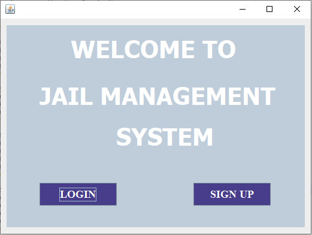

1. DATABASE
Prisoners TABLE:This table stores all information about inmates held in the prison.
Users table:
This could represent the individuals who have access to the farm management system. This might include all users depending on the system's setup.A Visit time:
this entity represent the all posible scheduled time provided by the prison to visit the prisoners so visitors are eligible to choose proper time to visit regarding their plans.Schedule_visit_time:
This entity hold the schedules of time allowed for visitors. all presents schedules booked by visitors and help the RCS.Prisons:
1. This entity hold the data of all prisons found in Rwanda. The attributes of a Schedule entity typically include: Prison_id Prison_name Prison_district Prison_sector
2 . JAVA PROGRAMMING
Introduction
In this chapter, we delve into the utilization of Java, a robust and versatile general-purpose programming language, to bring to fruition the meticulously analyzed system outlined in the preceding chapters. Here, we explore the seamless integration of Java with the database system discussed earlier and elucidate how this synergy forms the backbone of our comprehensive solution.Tools used to develop this system in java programming:
- Eclipse IDE: an integrated development environment used in computer programming. It contains a base workspace and an extensible plug-in system for customizing the environment. It is the second-most-popular IDE for Java development, and, until 2016, was the most popular.
- JAR stands for Java Archive. It's a file format based on the popular ZIP file format and is used for aggregating many files into one. Although JAR can be used as a general archiving tool, the primary motivation for its development was so that Java applets and their requisite components. MySQL Connectors. MySQL provides standards-based drivers for JDBC, ODBC, and .Net enabling developers to build database applications in their language
-
Forms in Jail management system and their descriptions
WELCOME PAGE OR LANDING PAGE IN MY Jail MANAGEMENT SYSTEM
This likely represents individual areas within the farm where crops are planted. Fields might be identified by location or assigned names. 
From this form 2 button login, Register are there with different direction and function in the system but all having same goal. Login: this button is dedicated for system admin, to login so that he/she can do more in the system. Register: individual user can register on his/her own so this register button will direct this employee to form to fill his/her information.-
Login form
As we have described in above page login button will direct as on this users login page.
-
SIGN UP FORM
As we have described in above page login button will direct as on this users Sign up page if you do not have account.
-
Admin HOME PAGE
For admin to continue his/her tasks he will need to login using created and allowed email and password otherwise no access will be given. This page is your starting point for using the Prison Management System, a software tool designed to help manage correctional facilities more efficiently. Buttons: Each button represents a different area of the system that you can explore. . "INMATES": Allows you to view information about inmates and add new inmate. "EMPLOYEES": Allows you to view information about employees of RCS and others working in the facility and add new employee. "PRISONS": Provides information about different prisons managed by the system in the country and add new if exist. "VISITORS": Provides information about visitors who visit the facility. "SCHEDULED VISITS": Allows you to view scheduled visits by visitors.
-
INMATES PAGE
As we mentions before When you click on the "INMATES" button, you'll be taken to a page where you can view and manage information about inmates in the correctional facility. What You Can Do on the INMATES Page: • Add Inmate: You can add a new inmate to the system by entering their details such as first name, last name, identity card number, gender, marital status, date of birth, admission date, release date, and prison ID. Click the "ADD" button to save the information. • Delete Inmate: If you need to remove an inmate from the system, you can do so by entering the inmate's ID and clicking the "DELETE" button. • Update Inmate Information: If any information about an inmate changes, such as their name or release date, you can update it by entering the inmate's ID and the new information, then clicking the "UPDATE" button. • View Inmate Information: You can view a list of all inmates currently in the system, including their ID, name, identity card number, gender, marital status, date of birth, admission date, release date, and the prison they're assigned to. Click the "VIEW" button to see the list. Important Note: Make sure to enter accurate information when adding, updating, or deleting inmates to ensure the system operates smoothly and accurately reflects the status of inmates in the facility.
-
Employees page
As Clicking on the "EMPLOYEES" button takes you to a page where you can view and manage information about employees working within the correctional facility. Actions You Can Perform on the EMPLOYEES Page: • Add Employee: You can add a new employee to the system by entering their details such as first name, last name, identity card number, phone number, gender, marital status, date of birth, email, password, and role. Click the "ADD" button to save the information. • Delete Employee: If you need to remove an employee from the system, you can do so by entering the employee's ID and clicking the "DELETE" button. • Update Employee Information: If any information about an employee changes, such as their name or phone number, you can update it by entering the employee's ID and the new information, then clicking the "UPDATE" button. • View Employee Information: You can view a list of all employees currently in the system, including their ID, name, identity card number, phone number, gender, marital status, date of birth, email, and role. Click the "VIEW" button to see the list. Important Note: • Ensure you enter accurate information when adding, updating, or deleting employees to maintain the accuracy and efficiency of the system.
-
PRISONS PAGE
The "PRISONS" button leads to a page where you can manage information about the prisons within the correctional system. Here's a breakdown of the features and functionality of the "PRISONS" page: PRISONS Page Overview: • Add Prison: You can add a new prison to the system by entering its name, district, and sector details into the respective text fields and clicking the "ADD" button. • Delete Prison: To remove a prison from the system, enter the prison's ID into the designated text field and click the "DELETE" button. • Update Prison Information: If any details about a prison need to be changed, such as its name, district, or sector, you can update the information by entering the prison's ID and the new details, then clicking the "UPDATE" button. • View Prison Information: Clicking the "VIEW" button allows you to see a list of all prisons currently in the system, including their ID, name, district, and sector. Note: Ensure that you enter accurate information when adding, updating, or deleting prisons to maintain the integrity and accuracy of the correctional system's database.
-
VISITORS PAGE
The "Visitors" button leads to a page where you can view all the visitors are in the system between visitors and inmates. Here's an overview of the functionality and features of the "Visitors" page: All Scheduled Visits Page Overview: • Retrieve Scheduled Visits: Clicking the "Retrieve Scheduled Visits" button retrieves all scheduled visits from the database and displays them in a table format.
-
Scheduled Visits PAGE
The "All Scheduled Visits" button leads to a page where you can view all the scheduled visits between visitors and inmates. Here's an overview of the functionality and features of the "All Scheduled Visits" page: All Scheduled Visits Page Overview: • Retrieve Scheduled Visits: Clicking the "Retrieve Scheduled Visits" button retrieves all scheduled visits from the database and displays them in a table format. After completing the administrative tasks, such as managing prisons, inmates, and scheduled visits, it's time to navigate to the employee section. In the admin path, we've handled crucial functionalities like adding, updating, and deleting information related to prisons, inmates, and visits. Now, transitioning to the employee section entails focusing on managing employee details, including their personal information, roles, and responsibilities within the system. Also employee have to log in using the same form as the admin but the system navigate him or her to the propriety employee home page and give him/her the functionalities she/he deserve.
-
Employee Home PAGE
For employee to continue his/her tasks he will need to login using created and allowed email and password otherwise no access will be given. This page is your starting point for using the Prison Management System, a software tool designed to help manage correctional facilities more efficiently. Buttons: Each button represents a different area of the system that you can explore. "HOME": Takes you back to this page. "INMATES": Allows you to view information about inmates. "PRISONS": Provides information about different prisons managed by the system."SCHEDULED VISITS": Allows you to view scheduled visits by visitors.
-
Employee Inmate PAGE
As we mentions before When you click on the "INMATES" button, you'll be taken to a page where you can view information about inmates in the correctional facility.
-
Employee Schedule Visit PAGE
The "PRISONS" button leads to a page where employee can view information about the all users scheduled time to visit inimate within the correctional system. To wrap things up, this chapter is all about Java programming, especially in the system I built. I've managed to create the final product I aimed for, with good data handling and a nice design. But there's still more work to be done, and I can learn a lot from getting feedback from people who aren't involved in building the system. They might see things differently and help me make improvements. So, while I'm happy with what I've accomplished, I know there's always room to make things even better.
-
In conclusion, this chapter focuses on Java programming, particularly in the system I developed. I'm pleased to have achieved the desired final product, with effective data management and an attractive design. However, there are areas that still require improvement, and valuable insights from external perspectives, not just from the developer's viewpoint, can help identify these areas. While I'm satisfied with the